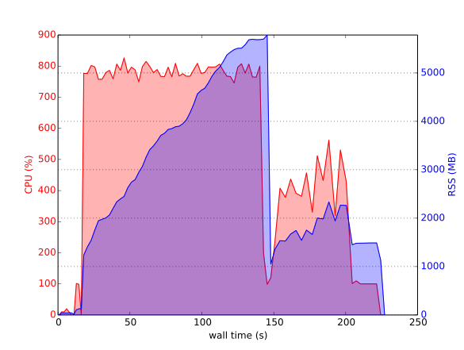

GraphPG
Resource Usage of a Process Group
This tool adds up CPU and RSS (actually used RAM, as opposed to virtual allocaitons) of all processes of a group of processes. The intended use case is to visualize parallel compilation runs, and how they use cpu and ram.
Usage
Using the program simply amounts to checking out the git repo and running:
/path/to/graphpg [command]
This then executes the command, samples resource usage about once every second, and then draws a plot when the command is finished.
Example
For example, rebuilding the SageMath library:
/path/to/graphpg sage -ba
yields the following graph on a quad-core machine:
